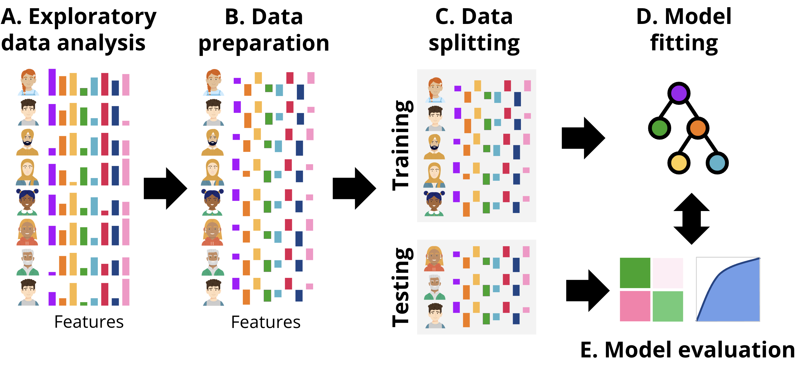
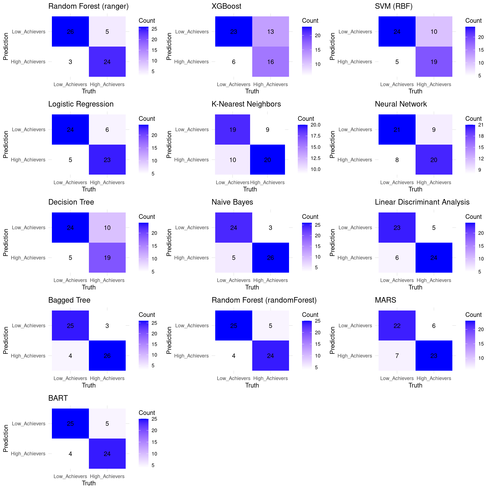

# Load necessary libraries
library(randomForest) # For Random Forest model
library(tidyverse) # For data manipulation and visualization
library(rsample) # For data splitting and modeling workflow
library(caret) # For model evaluation
library(pROC) # For visualizing receiver operating characteristic (ROC curves)
library(rio) # For importing data files
# Set seed for reproducibility
set.seed(1410)4 Artificial Intelligence: Using Machine Learning to Classify Students and Predict Low Achievers
Abstract
This chapter addresses the classification of at-risk students in educational settings using machine learning approaches in R. Transitioning from regression-based predictions of students’ grades covered by the previous chapter, the focus here shifts to identifying broader categories of academic performance, such as low achievers or potential dropouts. Early identification of such students enables timely interventions, one of the main goals of learning analytics. The process is first illustrated through a Random Forest classifier, using engagement indicators to classify students into high and low achievers. The chapter demonstrates the complete modeling workflow, including data preparation, model training, and evaluation using performance metrics. Additionally, the tidymodels framework is explored as a more modern alternative that enables easy comparison with other AI / machine learning algorithms like Naive Bayes or Support Vector Machine.
1 Introduction
In the previous chapter [1], we implemented machine learning to predict students’ grades as a continuous outcome, i.e., predicted the numerical final grades, which is often referred to as a regression problem. However, more often than not, we are not interested in the specific grade but rather in a broad range or category such as drop-outs (students who abandon the course) or low achievers (students who will score below a certain grade or fail the course). In that, we want to identify whether a student is at risk of dropping out or failing a course and, therefore, may need support. Hence, in this chapter we address this achievement classification problem. The most common achievement classification problem is to classify or in fact predict low achievers [2]. This is commonly done with early course data given that there will be an opportunity for remedial and support before the end of the course. Similar to the previous chapter, we will start by demonstrating the code for a random forest model [1]. Random forest is chosen because it is robust and offers insights (explanation) into the important variables that drove the algorithm to take a decision [3]. The analysis process involves a sequence of steps similar to the previous chapter with two notable differences. First, we have to prepare the data in a slightly different manner and the evaluation and the metrics follow a different approach given that it is a classification problem. Also, similar to the previous chapter, we will begin with the traditional approach and then we will proceed with the tidymodels approach.
2 Previous research on identifying at-risk students
There are several aims in research on the identification of at-risk students: 1) to develop a model to identify the at-risk students, 2) to identify attributes or indicators for the identification of at-risk students, 3) to develop and evaluate intervention methods to prevent student dropout or failure [4–6].
Several studies compared the performance of several algorithms to predict at-risk students. For example, [7] reported that Naïve Bayes (NB) outperformed k-Nearest Neighbors (KNN), Decision Tree (DT), Random Forest (RF), and Support Vector Machines (SVM). [8] developed a predictive model using genetic algorithms that performed better than DT, RF, Multilayer Perceptron, Logistic Regression (LG), and the AdaBoost algorithm (ADA). The Deep Long Short-Term Memory Model by [9] outperformed LG and artificial neural networks. RF was the best-performing algorithm in [10] compared to SVM, KNN, ET, ADA, Gradient boosting classifier, and Deep Feed Forward Neural Network, in [11] compared to SVM, KNN, DT, ADA, Extreme Gradient, Bayesian Classifier, and Linear Discriminant Analysis, and in [12] compared to DT, SVM and NB. [13] reported that KNN had a higher performance than LG, SVM with different kernels, DT, and RF. Finally, instead of comparing different methods, [14] combined five base classifiers (NB, SVM, KNN, Repeated Incremental Pruning to Produce Error Reduction classifier and C4.5 classifier) into the Majority Voting ensemble classifier. As the diversity of potential classification algorithms and the differing performance results indicate, the portability of predictive models from one context to another can be challenging [12, 15]. In addition, model interpretability and transparency are important in the practical implementations of predictive models. However, there is a trade-off in predictive accuracy and the ability to generate generalizable models of low transparency models to take into consideration [15].
The selection of data and development of appropriate indicators used in a predictive model is a subject of extensive research. Most studies use student log data to determine student performance [e.g., 8, 16, 17]. Several studies complement student activity data with additional data sources. For example, [18] included not only student log data but also library book loans or card swipes into buildings. [7] used the pre-test scores and formative assessment scores in their predictive model. [19] found that demographic data improved prediction. [20] included a bias analysis in order to include three protected demographic attributes into their predictive model. [21] collected clicker data, as the learning management system was not popular to use by students. It is important to remember that every predictive model needs to be complemented by human judgment and contextual information. The research reported in [22], where the authors focused on examining false positive and false negative errors of a predictive model, showed that there are many events that can influence student behavior and performance that are not captured by the predictive models, such as family or work responsibilities and health issues.
The typical definitions of at-risk students include students who are likely to drop out of a class or students who may fail a particular exam. A vast body of research reported indicators of struggling students identified by their predictive models. For example, [14] found that the strongest predictors of performance are connected to the successful completion of a set of course activities, such as watching videos or completing self-assessment quizzes. Similarly, [6] reported that student engagement and the consistency of using online resources were the strongest performance predictors. [10] found that clickstream and assessment variables had the most significant impact on student performance. [12] reported the highest predictive power of formative assessment scores and cumulative GPA. [23] highlighted the importance of the first written assignment and quiz for student attrition. A similar finding was reported in [11], who reported the average grade obtained in the first period of the first semester as the strongest dropout predictor. Other conceptualizations of at-risk students include tracking when a student suddenly changes their typical behavior in an online learning system [19] or defining a specific threshold to consider a student at risk, e.g., scores below 5% over the passing mark [6].
The temporal dimension is crucial in developing predictive models. It includes several aspects, such as how often predictions should be calculated, how long the data should be collected to ensure accurate predictions, when predictions should take place in order to be actionable, or how long a student should be inactive to trigger an intervention. For example, [14] used data from the first cohort of students to develop a classifier for another cohort of students. [8] generated a prediction model every two weeks, while [18] generated an alert of no-engagement after a period of two weeks of inactivity. Others calculate predictions every week [e.g., 24, 25] or every four weeks [12] or sometimes even on daily basis [26]. The intervals can also vary depending of the purpose of the predictive model. [13] developed predictions of passing or failing the next formative exam once a week, and, in addition, the classifiers from the first six weeks of classes were trained to predict the outcome of the mid-term exam, and the classifiers from weeks 7 to 12 were used to predict the end-of-semester’s exam outcome. [9] developed a classifier that has shown around 90% accuracy within the first 10 weeks of student interaction in an online learning environment, [23] reported a satisfactory prediction probability after week 5, while [10] showed almost 80% precision and accuracy score at 20% of the course length.
The predictions can be displayed directly to a student in the form of a dashboard or an alert. Another option is to inform a teacher about struggling students in a teacher-facing dashboard or through notifications [27]. Learning analytics dashboards that include predictive analytics are not widely implemented [28]. In addition, these dashboards often present only the prediction in the form of a visualization (e.g., signal lights) or percentage score without any explanation [29]. However, there is evidence that awareness of being at risk is not enough to improve student outcomes, and predictions need to be connected to be connected to an intervention [12]. The interventions can have different forms. For example, based on the analytics shown in a teacher-facing dashboard, a teacher can contact at-risk students personally to provide additional support [30]. Automated interventions embedded within the predictive analytics can include an adaptive feedback system that sends students custom messages based on their performance [13] or sending student-specific recommendations for learning materials and additional mentoring [12]. The evaluation of the interventions can be measured in reduced drop-out or increased performance. A comprehensive implementation of predictive analytics includes several iterations of improving the predictive model, adjusting an effective and transparent representation of the predictive results, and evaluating several intervention approaches [31].
3 Classifying students with R
In this section we present two approaches to implement classification with R: one following a more classic procedure (tutorial 1), and the second one following a more updated procedure (tutorial 2) based on tidymodels. Broadly, the workflow followed is depicted in Figure 11.4, aligned with the common steps that are performed in any ML pipeline. First, we explore the data to gain an idea of the magnitude, format and content of the data, explore the relationships between the different variables, etc. This step is called exploratory data analysis. Next, we prepare the data (B) for subsequent steps. This might include removing or fixing incomplete records, converting data to different types, unifying values that are close to one another, or rescaling the data. The transformations that we need to do are commonly dictated by the type of data and the ML models that we will be using in subsequent steps. After data preparation, the next step is data splitting (C). Here, the dataset is divided into training and testing sets. The training set is used to fit the model, while the testing set is reserved for evaluating its performance. It is crucial to ensure that the testing set remains untouched until the evaluation stage to provide an unbiased estimate of the model’s generalization ability. Once the data is split, the process moves to model fitting (D). During this stage, the training data is used to train the selected machine learning models. This involves finding the optimal parameters that minimize error or maximize predictive accuracy for the given task. Depending on the algorithm, the model may identify different patterns, such as decision boundaries or relationships between features and the target variable. Finally, in the model evaluation step (E), the trained model is tested on the unseen testing data. Performance metrics that quantify the accuracy and precision of the model are computed to determine how well the model performs on new data. This step ensures that the model is not overfitting the training data and can generalize well to other datasets. We can repeat this process for several models with different underlying ML algorithms (tutorial 3), or using only a subset of features of the data and compare the performance metrics among different models to select the one with the best fit.

3.1 Tutorial 1: A traditional classification approach with Random Forest
The first example follows the workflow depicted in Figure 11.4– We will estimate a Random Forest model to classify students into high achievers and low achievers based on their final grades and the engagement indicators as predictors. It is assumed that the reader is familiar with the R programming language. If that is not the case, it is recommended to refer to previous tutorials on the basics of R [32], data cleaning [33], basic statistics [34], and visualization [35]. In this chapter we will use a dataset that was used in the previous chapter [1] and based on this paper [17].
In Step 1, we start by loading the necessary R packages. We use randomForest [3] to estimate a random forest model, tidyverse [36] for data manipulation and visualization, rsample [37] for splitting the data, caret [38] for model evaluation, and pROC to visualize this evaluation. We also use the package rio [39] to import the data. To ensure reproducibility, we set the seed to a random number (1410). Setting the seed ensures that the code will produce identical results every time it is run. For instance, the data will be randomly split in the same way each time.
The next step would be conducting exploratory data analysis (EDA) to better understand the dataset and identify possible relationships between variables or problems in the data (Figure 11.4–A). We implemented this step in detail with the same dataset in Chapter 3 [1] so we will not repeat it here for the sake of brevity. Therefore, we can move on to the next step, which is data preparation (Figure 11.4–B). We prepare the data by creating a new binary classification target variable named Achievement by categorizing students into High_Achievers and Low_Achievers based on their Final_Grade. Those who are above the median (top 50%) will be classified as high achievers and the others will be classified as lower achievers. This categorical variable is coded as a factor as it is required by several functions. Of course, there are several ways to label students as at risk; for instance, based on a threshold score of 60% or even higher.
In Step 2, we split the dataset into training and testing sets using an 80/20 split where we will use 80% of the data to train the model and 20% for evaluation (corresponding to Figure 11.4–C). We use the argument strata = "Achievement" to make sure that both the training and testing datasets have balanced classes of low and high achievers.
Having prepared the data we will then, define and fit the random forest model (Figure 11.4–D) to predict Achievement based on engagement indicators e.g., lecture views, forum activity, session counts, total duration of activities, and active days.
Lastly, to evaluate the model (Figure 11.4–e), we make predictions on the test dataset using the fitted model. For binary classification models, the evaluation commonly includes a confusion matrix as well as other metrics e.g., accuracy, precision, and recall as well as a visual evaluation through the receiver operating characteristic (ROC) curve, which we will explain in context with the estimation code.
The first chunk of code loads the necessary libraries and the data that we will use for building the model and sets a random seed as described earlier.
3.1.1 Preparing the data
As a first step in our analysis, we prepare the data (Figure 11.4–B) by creating a binary target variable, Achievement, which categorizes students based on their Final_Grade. Specifically, students with grades above the median are labeled as “High Achievers”, and those below are labeled as “Low Achievers”. This transformation is performed using the mutate function, ensuring the target variable is a factor with appropriate levels.
# Step 1: Load and prepare the data
raw_data <- import("https://github.com/lamethods/data2/raw/main/lms/lms.csv")
# Create a binary classification target variable
median_grade <- median(raw_data$Final_Grade)
student_data <- raw_data |>
mutate(Achievement = factor(ifelse(Final_Grade > median_grade,
"High_Achievers", "Low_Achievers"),
levels = c("Low_Achievers", "High_Achievers")))3.2 Splitting the data into training and testing sets
In the second step, we split the dataset into training and testing sets (Figure 11.4–C) using an 80/20 split. To maintain the class distribution, we use stratified sampling by passing the option strata to the initial_split function with the which takes care of distributing the achievement classes (high and low achievers) in the training and testing sets in a balanced way. In doing so, we ensure that both the training and testing sets are representative of the overall class distribution and we create a more balance model.
# Step 2: Split the data into training and testing sets
data_split <- initial_split(student_data, prop = 0.8, strata = "Achievement")
train_data <- training(data_split)
test_data <- testing(data_split)3.3 Creating and training the model
In step 3, we create and fit a random forest model using the randomForest function (Figure 11.4–D). The model predicts the Achievement variable based on engagement indicators (e.g., course views, lecture views, forum consumption and contribution), regularity indicators (Regularity Course View, Regularity Lecture_View, Regularity Forum Consume, Regularity Forum Contribute), and time indicators (session counts, total duration of activities, active days) [16]. The model is specified using a formula syntax: target_variable ~ predictor_1 + predictor_2 + ... + predictor_n. To ensure model robustness, we set ntree to 1000 (please refer to the previous chapter for more details on the number of trees [1]). Given that we are also interested in explaining the results, we set the importance argument to TRUE to estimate the importance of each variable.
# Step 3: Create and fit a Random Forest model
rf_model <- randomForest(
Achievement ~ Freq_Course_View + Freq_Lecture_View + Freq_Forum_Consume +
Freq_Forum_Contribute + Regularity_Course_View +
Regularity_Lecture_View + Regularity_Forum_Consume +
Regularity_Forum_Contribute + Session_Count +
Total_Duration + Active_Days,
data = train_data,
ntree = 1000,
importance = TRUE)3.4 Evaluating the model
In step 4, we apply the model that we just trained to a new dataset (the test set) to evaluate its performance on new data (unseen by the model) that we held out. This allows us to evaluate how the model perform, or in other words, how likely the results we obtained to replicate in the future. A good model is expected to perform well on both learning and testing data. For the evaluation purpose, we use the predict function to generate predictions from our trained random forest model, rf_model and the test_data. The predict function generates two types of predictions: the probabilities and the classes.
1) Probability Predictions: estimate the probability of a student belonging to each achievement category (Low Achievers or High Achievers), we save these probabilities in a predictions_prob variable. To get these probabilities we specify the argument type = "prob" argument.
2) Class Predictions: predict the most likely achievement category for each student i.e., whether the student is predicted as high or low achiever. We save these class predictions in the predictions_class variable.
In the last step, and for convenience, we we add these prediction as extra columns within the original test dataset to make it easier for further analysis.
# Step 4: Make predictions on the test set for the probabilities and the classes
predictions_prob <- predict(rf_model, test_data, type = "prob")
predictions_class <- predict(rf_model, test_data)
# Add predictions and probabilities to the test dataset
test_data <- test_data |>
mutate(Predicted_Class = predictions_class,
Probability_Low_Achievers = predictions_prob[, "Low_Achievers"],
Probability_High_Achievers = predictions_prob[, "High_Achievers"])In Step 5, we evaluate the model’s performance (Figure 11.4–E). For this, we use the confusionMatrix function from the caret package, which provides a detailed evaluation, including the confusion matrix and several other metrics. The confusion matrix is a table that summarizes the model’s predictions compared to the actual outcomes. Specifically, it shows the counts of correctly predicted positive cases (true positives), correctly predicted negative cases (true negatives), incorrectly predicted positive cases (false positives), and incorrectly predicted negative cases (false negatives).
For example, in our case:
- True Positives (TP): 20 Low-achieving students were correctly classified as “Low Achievers”.
- True Negatives (TN): 23 High-achieving students were correctly classified as “High Achievers”.
- False Positives (FP): 9 Low-achieving students were incorrectly classified as “High Achievers”.
- False Negatives (FN): 6 High-achieving students were incorrectly classified as “Low Achievers”.
3.4.1 Evaluation metrics
The confusionMatrix package produces several classification metrics; we will explain them here with equations in light of our results.
Accuracy: Measures the proportion of correct predictions (both true positives and true negatives) out of the total number of cases. In our case,
accuracywas 0.7414 indicating that approximately 74.14% of the classifications were correct. The 95% CI (Confidence Interval) indicates that the interval (0.6096, 0.8474) likely contains the true accuracy. The accuracy is calculated according to the following equation:\[ \text{Accuracy} = \frac{TP + TN}{TP + TN + FP + FN} = \frac{20 + 23}{20 + 23 + 9 + 6} = 0.7414 \]
Kappa: Cohen’s Kappa is a measure of agreement between the observed accuracy and the accuracy expected by chance. In our case, the kappa value was 0.483 indicating a moderate agreement beyond chance. As a practical rule, Kappa of 0–0.20 is considered slight, 0.21–0.40 as fair, 0.41–0.60 as moderate, 0.61–0.80 as substantial, and 0.81–1 as almost perfect.
\[ \kappa = \frac{\text{Accuracy} - \text{Expected Accuracy}}{1 - \text{Expected Accuracy}} = \frac{0.7414 - 0.5}{1 - 0.5} = 0.4828 \]
Mcnemar’s Test P-Value: This test assesses if FP and FN differ significantly, the high p-value (0.789) in our case suggests no significant difference between the error rates for either class.
3.4.2 Sensitivity and Specificity
Sensitivity (True Positive Rate) measures the model’s ability to correctly identify “Low Achievers” (the positive class in this case). A value of 0.6897 indicates that the model were able to correctly identify 68.97% of actual “Low Achievers.”
\[ \text{Sensitivity} = \frac{TP}{TP + FN} = \frac{20}{20 + 9} = 0.6897 \]
Specificity (True Negative Rate) measures the model’s ability to correctly identify “High Achievers” (the negative class). A value of 0.7931 suggests that the model correctly identified 79.31% of actual “High Achievers.”
\[ \text{Specificity} = \frac{TN}{TN + FP} = \frac{23}{23 + 6} = 0.7931 \]
Please note that the model was able to identify more of high achievers than low achievers, this is probably due to the fact that high achievers generate more data that can be used to identify them.
3.4.2.1 Predictive Values
Positive Predictive Value (PPV or Precision): The proportion of positive results that are true positives. The PPV of 0.7692 indicates that 76.92% of the predicted “Low Achievers” are actual “Low Achievers”.
\[ \text{PPV} = \frac{TP}{TP + FP} = \frac{20}{20 + 6} = 0.7692 \]
Negative Predictive Value (NPV): The proportion of negative results that are true negatives. The NPV of 0.7188 indicates that 71.88% of the predicted “High Achievers” are actual “High Achievers”.
\[ \text{NPV} = \frac{TN}{TN + FN} = \frac{23}{23 + 9} = 0.7188 \]
3.4.2.2 Prevalence and Detection
These metrics provide insights into the distribution of the positive class (Low Achievers) in the actual data and in the model’s predictions.
Prevalence: The proportion of the total number of cases that are positives. The prevalence of 0.5 indicates that 50% of the students are “Low Achievers”. The detection rate of 0.3448 indicates that 34.48% of the total students were correctly identified as “Low Achievers”. The detection prevalence of 0.4483 indicates that 44.83% of the students were predicted to be “Low Achievers”.
The code below computes the confusion_matrix and prints it.
# Step 5: Evaluate the model
# Create confusion matrix
confusion_matrix <- confusionMatrix(test_data$Predicted_Class, test_data$Achievement)
# Print confusion matrix and other metrics
print(confusion_matrix)Confusion Matrix and Statistics
Reference
Prediction Low_Achievers High_Achievers
Low_Achievers 21 6
High_Achievers 8 23
Accuracy : 0.7586
95% CI : (0.6283, 0.8613)
No Information Rate : 0.5
P-Value [Acc > NIR] : 5.025e-05
Kappa : 0.5172
Mcnemar's Test P-Value : 0.7893
Sensitivity : 0.7241
Specificity : 0.7931
Pos Pred Value : 0.7778
Neg Pred Value : 0.7419
Prevalence : 0.5000
Detection Rate : 0.3621
Detection Prevalence : 0.4655
Balanced Accuracy : 0.7586
'Positive' Class : Low_Achievers
3.4.2.3 Visual evaluation
In step 6 we evaluate the model performance visually. We use a fourfold plot to visualize the confusion matrix, in which the circles in each quadrant are proportional to the counts in the matrix (Figure 4.2). The additional circumferences in each quadrant represent the confidence intervals of each count.
library(caret)
# Step 6: Visualize results
fourfoldplot(confusion_matrix$table)
roc_obj <- roc(test_data$Achievement, predictions_prob[, "Low_Achievers"])
Next we plot the ROC curve which is a graphical representation of model’s performance across all possible threshold values (Figure 4.3). The ROC curve plots the True Positive Rate (Sensitivity) against the False Positive Rate (\(1 - \text{Specificity}\)). In other words, the ROC curve helps visualize the trade-off between sensitivity and specificity. A good model would have higher values of sensitivity and specificity resulting in a curve above the diagonal line while a bad model would produce a diagonal line. Another related value is the area under the curve (AUC). The AUC quantifies the overall ability of the model to discriminate between positive and negative classes, value ranges from 0 to 1 where AUC = 0.5 indicates the model performs no better than random guessing, values below 0.5 indicate that the model performs worse than random guessing and AUC values more than 0.5 indicates the model performs better than guessing (assuming that there are the same number of high achievers than low achievers). In our case, the value was 0.76 which is a moderate performance.
# Plot ROC curve
plot(roc_obj, asp = NA)
auc_value <- auc(roc_obj)
print(paste("AUC:", auc_value))[1] "AUC: 0.762187871581451"
3.4.2.4 Explainability
Given the importance of intepretability of machine learning models, it is important to understand which of the features of our dataset contribute to the final prediction [40, 41]. For this purpose, we can extract the variable importance and visualize them. The code below extracts variable importance values from the fitted random forest model (rf_model). The importance values contain two metrics: MeanDecreaseAccurac and MeanDecreaseGini. The MeanDecreaseAccuracy measures how much the accuracy of the model decreases when a particular variable is excluded. Higher values indicate that the variable is more important for maintaining the accuracy of the model. For instance, Freq_Forum_Contribute has the highest MeanDecreaseAccuracy value of 39.6879041, suggesting it is the most critical variable for the model’s accuracy. In contrast, Freq_Lecture_View has a negative value (\(-0.2569615\)), indicating that excluding this variable slightly improves the model’s accuracy. Please note that a more detailed explanation of model explainability is offered in next chapters with more comprehensive methods [42, 43].
The MeanDecreaseGini measures the total decrease in node impurity that a variable contributes across all the trees in the forest. Higher values signify greater importance. For example, Freq_Forum_Contribute again shows high importance with a MeanDecreaseGini value of 21.348017, emphasizing its importance for predicting students’ achievement. On the other hand, Freq_Lecture_View has a lower MeanDecreaseGini value of 5.959581, indicating it is less influential in reducing impurity.
# Extract variable importance from the fitted model
importance_values <- rf_model$importance
# Convert to a data frame for plotting
importance_df <- as.data.frame(importance_values)
importance_df$Variable <- rownames(importance_df)# Plot variable importance for MeanDecreaseAccuracy
ggplot(importance_df, aes(x = reorder(Variable, MeanDecreaseAccuracy),
y = MeanDecreaseAccuracy)) +
geom_bar(stat = "identity", fill = "turquoise") +
coord_flip() +
labs(x = "Variable",
y = "Importance") +
theme_minimal()
# Plot variable importance for MeanDecreaseGini
ggplot(importance_df, aes(x = reorder(Variable, MeanDecreaseGini),
y = MeanDecreaseGini)) +
geom_bar(stat = "identity", fill = "turquoise") +
coord_flip() +
labs(x = "Variable",
y = "Importance") +
theme_minimal()
MeanDecreaseAccuracy
MeanDecreaseGini3.5 Tutorial 2: An alternative implementation of random forests with tidymodels
In this section, we present an alternative to the process described in the previous example using tidymodels [44] instead of the classic approach. The tidymodels framework offers a unified streamlined interface for machine learning in R that makes it easier to specify models, update them, and compare one against another. Instead of working with different packages for different models, each with its own syntax, tidymodels employs a consistent syntax across all stages of estimation. All the more so, when we need to estimate several models as it is the case in our tutorial, tidymodels makes it easier to estimate and maintain the code. The main packages within tidymodels include rsample [37] for data splitting, parsnip for a specifying models [45], recipes for data pre-processing and feature engineering [46], workflows for combining pre-processing, modeling, and yardstick [47] for model evaluation. A more detailed discussion of tidymodels can be found the in the previous chapter.
Performing the classification with tidymodels follows a sequence of steps similar to what we had before with some differences. In general, the first three steps (loading packages, preparing the data and splitting) are the same as before but later steps uses the standard approach of defining models, workflows, training and evaluation. Below is a detailed description of the code and estimation steps.
3.5.1 Preparing the data
The first steps are similar to the traditional approach: we load the necessary packages tidyverse and tidymodels; then we prepare the data (Figure 11.4–B) by creating a binary target variable, which we call Achievement based on Final_Grade to classify students to low and high achievers.
library(tidymodels)
# Set seed for reproducibility
set.seed(1410)
# Load and prepare the data
# Assuming student_data is already loaded into the environment
student_data <- raw_data |>
mutate(Achievement = factor(ifelse(Final_Grade > median(Final_Grade),
"High_Achievers", "Low_Achievers"),
levels = c("Low_Achievers", "High_Achievers")))3.5.2 Splitting the data into training and testing sets
Next, we split the data into training and testing sets (Figure 11.4–C). The training set is then used to make the actual predictions and the testing test is used for model evaluation. We opt again here for stratified sampling strata = Achievement to preserve class distribution (balanced proportion of high and low achievers in the training and testing datasets).
# Step 2: Split the data into training and testing sets
data_split <- initial_split(student_data, prop = 0.8, strata = Achievement)
train_data <- training(data_split)
test_data <- testing(data_split)3.5.3 Creating a recipe
Unlike the previous chapter [1], where we used a formula, we extend it here by using a recipe. A recipe offers more options like including other data preparation and pre-processing steps. In our case, we define a recipe with a formula and also a function for normalizing the predictors so that all variables are on a similar scale. For that, we use step_normalize(all_predictors()) function which will create new variables with standard deviation of one and a mean of zero.
# Create a recipe
rf_recipe <- recipe(Achievement ~ Freq_Course_View + Freq_Lecture_View +
Freq_Forum_Consume + Freq_Forum_Contribute +
Regularity_Course_View + Regularity_Lecture_View +
Regularity_Forum_Consume + Regularity_Forum_Contribute +
Session_Count + Total_Duration + Active_Days,
data = train_data) |>
step_normalize(all_predictors())3.5.4 Creating the model
Next, we define the random forest model specifications. In this specification, we define the rf_spec object which will store the configuration for our model. The specification sets the trees parameter to 1000 which means the random forest will consist of 1000 decision trees. A larger number of trees generally leads to more stable results. The mtry parameter is set to 5, which means that during each split in the decision trees, the algorithm will randomly select 5 predictors (from the engagement indicators). This randomness helps prevent overfitting and ensures diversity among the trees. Then, we specify the engine for our random forest using the set_engine("ranger")** function. The ranger engine is a fast and efficient engine that can handle large datasets. Most importantly, we specify set_mode("classification"), which means that the random forest model will predict a categorical outcome (high or low achievers), compare this to regression in the previous chapter.
# Create a random forest model specification
rf_spec <- rand_forest(trees = 1000, mtry = 5) |>
set_engine("ranger", importance = "impurity") |>
set_mode("classification")3.5.5 Creating a workflow
The next step is to create a workflow which is a container that holds the recipe and the model specifications that we just defined. Workflows provide a way to chain these components together and execute them in a specific order when fitting the algorithm. To create a workflow for a random forest model, we begin by initializing the workflow object using the function workflow() and adding the recipe rf_recipe that that we just created containing the formula and the pre-processing steps. Next, we specify the model that we just defined rf_spec. In the following step, we fit the model (Figure 11.4–D) to the training data by passing it to the fit function and the workflow and we store the fitted model to the object rf_fit_tidy. rf_fit_tidy contains data about how the model predicts the data.
To evaluate the model’s performance (Figure 11.4–E), we generate predictions on the test dataset test_data using the trained model rf_fit_tidy. We enhance our test dataset with these predictions by computing three new columns and adding them to the test_data: Predicted_Class_tidy, which contains the predicted class for each observation; Probability_Low_Achievers_tidy, which gives the probability of an observation being classified as a “Low Achiever”; and Probability_High_Achievers_tidy, which provides the probability of an observation being classified as a “High Achiever”. The resulting augmented dataset combines original features and the predictions and their probabilities which will make it easier to plot and evaluate the data later.
# Create a workflow
rf_workflow <- workflow() |>
add_recipe(rf_recipe) |>
add_model(rf_spec)
# Fit the model
rf_fit_tidy <- rf_workflow |>
fit(data = train_data)
# Make predictions on the test set
predictions_prob_tidy <- predict(rf_fit_tidy, test_data, type = "prob")
predictions_class_tidy <- predict(rf_fit_tidy, test_data)
# Add predictions and probabilities to the test dataset
test_data <- test_data |>
mutate(
Predicted_Class_tidy = predictions_class_tidy$.pred_class,
Probability_Low_Achievers_tidy = predictions_prob_tidy$.pred_Low_Achievers,
Probability_High_Achievers_tidy = predictions_prob_tidy$.pred_High_Achievers)3.5.6 Evaluating the model
In the next step, we evaluate the performance of the model. The process involves creating a confusion matrix and computing several evaluation metrics as before. The first part of the code generates a confusion matrix. This matrix provides a summary of how well the model is performing in distinguishing between the classes.
In the code below, we create the confusion matrix using the conf_mat() function. Computing the evaluation metrics in yardstick [47] has two steps 1) defining the metrics and then computing them. So, we define the custom set of evaluation metrics using the metric_set function. This set includes the common classification metrics: accuracy, sensitivity, specificity, F1 score, balanced accuracy, positive predictive value, and negative predictive value.
Finally, we compute these custom metrics and add them the test data. The function calculates all the specified metrics, comparing the true Achievement values against the Predicted_Class_tidy predictions. The event_level = "first" parameter specifies which class should be considered the positive class for binary classification metrics, i.e., low achievers. The resulting detailed metrics are stored in ‘detailed_metrics_tidy’ and then printed.
The results of the evaluation shows that the accuracy of the model is 0.741 which means that 74.1% of “High Achievers” and “Low Achievers” were correctly classified. The sensitivity of 0.793 means that in 79.3% of the times, the model correctly identified students who are actually “Low Achievers” and labeled them as such. Specificity shows how the model identified the other category of students: “High Achievers” and identifying them which was approximately 69.0%. The F-measure, around 0.754, combines sensitivity and precision into a single metric, balancing the model’s ability to identify “High Achievers” with how accurate those predictions are. This score indicates a good balance between detecting “High Achievers” and avoiding false positives. In case you are interested, the F-measure is computed as the harmonic mean of precision and recall following this formula.
\[ \text{F1-Score} = 2 \cdot \frac{\text{Precision} \cdot \text{Recall}}{\text{Precision} + \text{Recall}} = 2 \cdot \frac{0.7692 \cdot 0.6897}{0.7692 + 0.6897} = 0.7273 \]
Positive Predictive Value (PPV) of 0.719 indicates how often the model’s prediction of “Low Achievers” is correct which was accurate in 71.9% of the time. Negative Predictive Value (NPV) was 0.769, showing the accuracy of predictions for “High Achievers was correct 76.9% of the time. Balanced Accuracy was 0.741 and reflects the model’s overall performance across both classes by equally weighting the ability to correctly identify”Low Achievers” and “High Achievers.”
# Confusion Matrix
conf_mat_tidy <- conf_mat(test_data, truth = Achievement,
estimate = Predicted_Class_tidy)
print(conf_mat_tidy) Truth
Prediction Low_Achievers High_Achievers
Low_Achievers 20 6
High_Achievers 9 23# Custom metric set
custom_metrics_tidy <- metric_set(accuracy, sens, yardstick::spec,
f_meas, bal_accuracy, ppv, npv)
# Compute all metrics
detailed_metrics_tidy <- test_data |>
custom_metrics_tidy(
truth = Achievement,
estimate = Predicted_Class_tidy,
event_level = "first")
print(detailed_metrics_tidy)# A tibble: 7 × 3
.metric .estimator .estimate
<chr> <chr> <dbl>
1 accuracy binary 0.741
2 sens binary 0.690
3 spec binary 0.793
4 f_meas binary 0.727
5 bal_accuracy binary 0.741
6 ppv binary 0.769
7 npv binary 0.719In the last step, we estimate and plot the AUC and ROC curve. The visualization and estimation follow exactly the same way we did before (Figure 4.5). The only difference is that we use roc_curve() function from the yardstick package [47]. The function takes two important arguments, the truth argument which represents the class we predicted and the probability of the class we are focusing on which is lower achievers in our case.
# Compute ROC and AUC using yardstick
roc_data_tidy <- test_data |>
roc_curve(truth = Achievement, Probability_Low_Achievers_tidy)
auc_value_tidy <- test_data |>
roc_auc(Achievement, Probability_Low_Achievers_tidy) |>
pull(.estimate)
# Plot ROC Curve using ggplot2
ggplot(roc_data_tidy, aes(x = 1 - specificity, y = sensitivity)) +
geom_line(color = "blue") +
geom_abline(linetype = "dashed", color = "red") +
labs(x = "False Positive Rate", y = "True Positive Rate") +
annotate("text", x = 0.75, y = 0.25,
label = paste("AUC =", round(auc_value_tidy, 3)), size = 5) +
theme_minimal()
3.5.7 Explainability
To extract the variable importance we have to pull the data from the model. In the code below we pull the variable importance data, create a data frame and then use ggplot to visualize it. As you can see, variable importance can be plotted and their interpretation could help guide us understand what actions students take that may be associated with better performance (Figure 4.6).
# Extract the ranger model from the workflow
importance_values <- pull_workflow_fit(rf_fit_tidy)$fit$variable.importance
# Convert to a data frame for plotting
importance_df <- as.data.frame(importance_values)
importance_df$Variable <- rownames(importance_df)
colnames(importance_df) <- c("Importance", "Variable")
# Plot variable importance
ggplot(importance_df, aes(x = reorder(Variable, Importance), y = Importance)) +
geom_bar(stat = "identity", fill = "turquoise") +
coord_flip() +
labs(x = "Variable", y = "Importance") +
theme_minimal() +
theme(
axis.text.y = element_text(color = "black"),
axis.title = element_text(color = "black"),
plot.title = element_text(size = 14, face = "bold", color = "black"))
tidymodels)3.6 Tutorial 3: Evaluating multiple models with tidymodels
In the next example, we will take advantage of tidymodels framework to fit, evaluate and compare several models. In most practical cases, we will need to estimate several models, evaluate them, compare them and choose the one that performs better.
In the next example, we will estimate several machine learning models using the tidymodels ecosystem to streamline the process. The aim —as we did before— is to classify students into high or low achievers based on their engagement indicators. The process will follow a systematic sequence: loading the packages and the data, preparing the data, splitting it into training and testing sets, creating a recipe, defining model specifications, creating workflows, fitting the models, making predictions, evaluating the models, and finally visualizing the results. Given that we are estimating 13 models, we will create functions to save time rather than repeating the same process 13 times in each step, these functions will help automate the repetitive tasks. The following code will explain these steps as follows:
3.6.1 Preparing the data
The first step, is similar in each code we discussed before, in which we load the required packages. Also, you may be prompted to install missing packages if some dependencies are not loaded. The required packages here are the packages that provide the engines for the algorithms we are estimating e.g., (ranger, xgboost, kernlab, glmnet, nnet, discrim, naivebayes, randomForest, baguette), and modeling and evaluation tools (yardstick, tidymodels). The engines are the software implementations of the algorithms we are estimating. Then we import the student data which includes the engagement indicators and the final grade and prepare it for analysis (Figure 11.4–B). Given that we are doing a classification task, we need a binary outcome, as before, we add a new column to the data that divides the students into “High_Achievers” or “Low_Achievers” based on whether their final grade is above or below the median (top or bottom 50%).
# Step 1: Load and prepare the data
# Assuming student_data is already loaded into the environment
student_data <- raw_data |>
mutate(Achievement = factor(ifelse(Final_Grade > median(Final_Grade),
"High_Achievers", "Low_Achievers"),
levels = c("Low_Achievers", "High_Achievers")))3.6.2 Splitting the data into training and testing sets
Then, we split the data into training and testing sets (Figure 11.4–C). We use initial_split from rsample with the option strata to ensure an 80/20 split while stratifying by the Achievement column to maintain the proportion of high and low achievers in both sets. These steps are already familiar by now.
# Step 2: Split the data into training and testing sets
data_split <- initial_split(student_data, prop = 0.8, strata = Achievement)
train_data <- training(data_split)
test_data <- testing(data_split)3.6.3 Creating a recipe
In this step, we create a recipe that specifies the predictors (engagement indicators) and the target variable (achievement). The recipe also includes a step to normalize all predictor variables, so that they are measured on the same scale. This normalization step is particularly important for algorithms that are sensitive to the scale of the input features to ensure that features contribute equally to the model. Given that we will use identical recipe for all models, we won’t have to write multiple recipes, this is in fact, one of the powerful features of tidymodels.
model_recipe <- recipe(Achievement ~ Freq_Course_View + Freq_Lecture_View +
Freq_Forum_Consume + Freq_Forum_Contribute +
Regularity_Course_View + Regularity_Lecture_View +
Regularity_Forum_Consume + Regularity_Forum_Contribute +
Session_Count + Total_Duration + Active_Days,
data = train_data) |>
step_normalize(all_predictors())3.6.4 Create all model specifications
In this step, we specify the machine learning models through the parsnip package interface [45]. This involves specifying each algorithm and setting the engine and the parameters. We selected some popular algorithms for demonstration purposes. However, for a full list of supported algorithms, please refer to the parsnip [45] documentation. Below is the list of algorithms we will demonstrate, along with their respective engines and packages:
Random Forest: Random Forest is an ensemble learning method that builds multiple decision trees and merges their predictions by averaging for more accurate and stable results. It is implemented using two engines:
rangerfrom therangerpackage [48], known for its speed and performance, andrandomForestfrom therandomForestpackage, which is the original R implementation [3].XGBoost (eXtreme Gradient Boosting): XGBoost is an efficient and scalable implementation of the gradient boosting framework, optimizing performance by iteratively improving model accuracy. It is implemented using the
xgboostengine from thexgboostpackage [49].Support Vector Machines (SVM): SVM is a powerful classification algorithm that finds the best boundary (hyperplane) to separate different classes in the data. It is implemented through the
kernlabengine from thekernlabpackage [50].Logistic Regression: Logistic Regression is a well-known classification algorithm that models the probability of a binary outcome. It uses the
glmengine from base R.K-Nearest Neighbors (KNN): KNN is a simple, non-parametric algorithm that classifies a data point based on the majority class of its nearest neighbors. It is implemented using the
kknnengine from thekknnpackage [51].Neural Networks: Neural Networks are computational models inspired by the human brain, capable of modeling complex patterns in data through layers of interconnected nodes. They are implemented using the
nnetengine from thennetpackage [52].Decision Trees: Decision Trees split the data into branches to help make decisions based on the features of the data. They are implemented using the
rpartengine from therpartpackage [53].Naive Bayes: Naive Bayes is a probabilistic algorithm based on Bayes’ theorem, assuming independence between features. It is implemented through the
naivebayesengine from thenaivebayespackage [54].Linear Discriminant Analysis (LDA): LDA is used for classification, finding the linear combinations of features that best separate different classes. It uses the
MASSengine from theMASSpackage [55].Bagged Trees: Bagged Trees is an ensemble method that improves the stability and accuracy of machine learning algorithms by combining multiple models. It uses the
rpartengine from therpartpackage [53].Multivariate Adaptive Regression Splines (MARS): MARS is a non-linear regression technique that models relationships by fitting piecewise linear regressions. It is implemented using the
earthengine from theearthpackage [56].Bayesian Additive Regression Trees (BART): BART is a Bayesian approach to machine learning that creates a sum-of-trees model for both regression and classification tasks. It is implemented using the
dbartsengine from thedbartspackage.
These models cover a wide range of popular approaches, all implemented under the parsnip framework for consistent and streamlined usage.
Below is the code that loads the required packags and creates a function specifying each model and its engine, ensuring the full name of the algorithm is used for better display in later steps.
library(tidymodels) # laod the tidymodels framework and its packages
# Load the required packages for each algorithm
# Random Forest
library(ranger) # Engine: ranger, known for its speed and performance
library(randomForest) # Engine: randomForest, the original R implementation
# XGBoost (eXtreme Gradient Boosting)
library(xgboost) # Engine: xgboost, gradient boosting framework
# Support Vector Machines (SVM)
library(kernlab) # Engine: kernlab, a powerful classification algorithm
# Logistic Regression
# Base R includes glm, no additional package needed
# K-Nearest Neighbors (KNN)
library(kknn) # Engine: kknn, a simple, non-parametric classification algorithm
# Neural Networks
library(nnet) # Engine: nnet, inspired by the human brain for complex patterns
# Decision Trees
library(rpart) # Engine: rpart, recursive partitioning for classification trees
# Naive Bayes
library(discrim) # Engine: naivebayes, based on Bayes' theorem
# Linear Discriminant Analysis (LDA)
library(MASS) # Engine: MASS, classification via linear combinations of features
# Bagged Trees
# Uses the same package as Decision Trees: rpart
# Multivariate Adaptive Regression Splines (MARS)
library(earth) # Engine: earth, non-linear regression with piecewise linear fits
# Bayesian Additive Regression Trees (BART)
library(dbarts) # Engine: dbarts, Bayesian approach creating a sum-of-trees model
library(baguette) # Engine: rpart, an ensemble of decision trees
library(parsnip) # Interface for `tidymodels`
set_classification <- function(x, engine) {
x |> set_engine(engine) |> set_mode("classification")
}
# Function to specify each model and its engine
create_model_specs <- function() {
list(
"Random Forest (ranger)" = rand_forest() |> set_classification("ranger"),
"XGBoost" = boost_tree() |> set_classification("xgboost"),
"SVM (RBF)" = svm_rbf() |> set_classification("kernlab"),
"Logistic Regression" = logistic_reg() |> set_classification("glm"),
"K-Nearest Neighbors" = nearest_neighbor() |> set_classification("kknn"),
"Neural Network" = mlp() |> set_classification("nnet"),
"Decision Tree" = decision_tree() |> set_classification("rpart"),
"Naive Bayes" = naive_Bayes() |> set_classification("naivebayes"),
"Linear Discriminant Analysis" = discrim_linear() |> set_classification("MASS"),
"Bagged Tree" = bag_tree() |> set_classification("rpart"),
"Random Forest (randomForest)" = rand_forest() |> set_classification("randomForest"),
"MARS" = mars() |> set_classification("earth"),
"BART" = parsnip::bart() |> set_classification("dbarts")
)
}
# Create the model specifications
model_specs <- create_model_specs()3.6.5 Creating the workflows and fitting the data
Rather than creating a list of 13 workflows, we define a function that automates the process and we use lapply to apply this function to all list items. The function helps easy specification of the models with their respective engines and parameters and the results will be a list which we will also use in further analysis in the same way.
The code below has two key functions: create_workflows and fit_models. The create_workflows function builds a workflow for each model specification in the provided model_specs list, using the specified model recipe and lapply to iterate over the list items. This results in a list of workflows. Then, the fit_models function is used to fit each of these workflows to the training data (Figure 11.4–D), again using lapply to apply the function to every workflow in the list.
create_workflows <- function(spec) {
workflow() |> add_recipe(model_recipe) |> add_model(spec)
}
model_workflows <- lapply(model_specs, create_workflows)
### Fitting the models
fit_model <- function(workflow) {
fit(workflow, data = train_data)
}
model_fits <- lapply(model_workflows, fit_model)3.6.6 Evaluating the models
Once the models are trained, we can make predictions on the test data. Similar to the previous steps, we create a make_predictions function, and then apply this function to each element of the model_fits list (created in the previous step). The function uses predict to get both class predictions and probabilities, and bind them with the test data for late steps in the evaluation evaluation.
We then, evaluate the models (Figure 11.4–E) with a custom function evaluate_model using several metrics as before. Our evaluation will includes computing a confusion matrix, the evaluation metrics (accuracy, sensitivity, specificity, F1 score, balanced accuracy, positive predictive value (PPV), and negative predictive value (NPV)) as well as ROC curve for each algorithm. Given that the function creates several objects for all the model, the function is a but more sophisticated, and uses list lists.
make_predictions <- function(fit) {
predict(fit, test_data) |>
bind_cols(predict(fit, test_data, type = "prob")) |>
bind_cols(test_data)
}
model_preds <- lapply(model_fits, make_predictions)
evaluate_model <- function(pred, model_name) {
# Confusion Matrix
conf_mat <- conf_mat(pred, truth = Achievement, estimate = .pred_class)
# Other metrics (Class metrics only)
metrics <- metric_set(accuracy, sens, yardstick::specificity,
f_meas, bal_accuracy, ppv, npv)
model_performance <- metrics(pred, truth = Achievement,
estimate = .pred_class)
# ROC Curve
roc_curve <- roc_curve(pred, truth = Achievement, .pred_Low_Achievers) |>
mutate(model = model_name)
list(conf_mat = conf_mat, performance = model_performance, roc = roc_curve)
}
# Evaluate each model and store results
evaluate_all_models <- function(preds, model_names) {
mapply(evaluate_model, preds, model_names, SIMPLIFY = FALSE)
}
evaluation_results <- evaluate_all_models(model_preds, names(model_preds))3.6.6.1 Combining and Plotting Results
We then combine the performance metrics and ROC curve data for all models into single data frames. These data frames will be used to generate visualizations and for comparison if needed.
combine_performance_metrics <- function(evaluation_results) {
performance_df <- do.call(rbind, lapply(evaluation_results, function(res) {
res$performance
}))
performance_df$model <- rep(names(evaluation_results),
times = sapply(evaluation_results, function(res) {
nrow(res$performance)
}))
performance_df
}
performance_df <- combine_performance_metrics(evaluation_results)
combine_roc_curves <- function(evaluation_results) {
do.call(rbind, lapply(evaluation_results, function(res) {
res$roc
}))
}
roc_df <- combine_roc_curves(evaluation_results)
extract_confusion_matrices <- function(evaluation_results) {
lapply(evaluation_results, function(res) {
res$conf_mat
})
}
conf_mat_list <- extract_confusion_matrices(evaluation_results)We define a color palette for plotting and then create plots for performance metrics and ROC curves.
palette <- c("darkgreen", "green", "cyan", "blue", "purple", "magenta", "pink",
"red", "orange", "yellow", "darkgoldenrod4", "grey", "black" )
performance_df |>
dplyr::select(model, .metric, .estimate) |>
pivot_longer(cols = .estimate, names_to = "metric", values_to = "value") |>
ggplot(aes(y = .metric, x = value, fill = model)) +
geom_bar(stat = "identity", position = "dodge") +
scale_fill_manual(values = palette, name = "Metric") +
theme_minimal() +
labs(x = "Value", y = "Model") 
ggplot(roc_df, aes(x = 1 - specificity, y = sensitivity, color = model)) +
geom_line(size = 0.5) +
geom_abline(linetype = "dashed") +
scale_color_manual(values = palette, name = "Metric") +
theme_minimal() +
labs(x = "1 - Specificity", y = "Sensitivity") +
theme(legend.position = "right")
Finally, we plot the confusion matrices for each model using a heatmap.
plot_confusion_matrix <- function(conf_mat, model_name) {
autoplot(conf_mat, type = "heatmap") +
scale_fill_gradient(low = "white", high = "blue") +
theme_minimal() +
labs(title = paste(model_name), fill = "Count")
}
library(gridExtra)
# List to store ggplot objects
plot_list <- list()
# Generate and store each confusion matrix plot
for (model_name in names(conf_mat_list)) {
conf_mat_plot <- plot_confusion_matrix(conf_mat_list[[model_name]], model_name)
plot_list[[model_name]] <- conf_mat_plot
}
# Combine all plots into one grid
# Adjust ncol based on how many columns you want
grid.arrange(grobs = plot_list, ncol = 3, nrow = 5) 
You can compare the algorithms and evaluate which algorithm has better performance and choose the best model based on this analysis.
4 Discussion
This chapter explained the application of machine learning, specifically classification techniques, to identify at-risk students in educational settings. We transitioned from the regression-based prediction of student grades discussed in the previous chapter [1], to a focus on identifying risky categories of academic performance namely low achievers.
The chapter demonstrated a detailed tutorial on using the Random Forest algorithm for classification. It covered the entire workflow, including data preparation—creating a binary target variable and splitting data into training and testing sets—model training, applying the model to new data, and evaluation using metrics like accuracy, precision, recall and sensitivity. Additionally, the importance of model interpretability was highlighted by showcasing how to extract and visualize variable importance in a Random Forest model. This helps in understanding which factors contribute most significantly to the classification, offering insights into student behaviors that correlate with success or failure. An alternative implementation using the tidymodels framework was presented. This modern approach provides a streamlined and consistent syntax for various machine learning tasks, making it easier to build, compare, and maintain models. Using tidymodels, we demonstrated how to automate the process of fitting, predicting, and evaluating thirteen different classification algorithms, including Random Forest, XGBoost, SVM, Logistic Regression, KNN, Neural Networks, Decision Trees, Naive Bayes, LDA, Bagged Trees, MARS, and BART.
If we can accurately early predict low achievers, we can identify those who are struggling early in the course. This allows for proactive interventions, preventing students from falling too far behind and potentially dropping out [17, 57]. Understanding the factors that contribute to a student being classified as “at-risk” can inform personalized support strategies [42, 43, 58]. For example, if low engagement with forum discussions is a significant predictor, educators can encourage participation or encourage students to interact with their peers. For teachers, they can use the classification models to identify struggling students before they fail a course, allowing them to reach out, offer additional support, and address any underlying issues that may be hindering progress. The insights gained from variable importance analysis can help teachers tailor their feedback and resources to address specific student needs. Furthermore, these models may help teachers allocate their time and resources more efficiently by focusing on students who need the most support—particularly valuable in large classes where providing individualized attention can be challenging. also, educators can use the data to initiate conversations about academic progress, identify areas where students are struggling, and collaboratively develop strategies for improvement.
However, it is important to acknowledge potential drawbacks associated with predictive modeling in education. One significant concern is the risk of profiling students and inaccurately labeling them as low achievers when they are not. Misclassifications can have detrimental effects on students’ self-esteem, motivation, and overall educational experience. False positives—students incorrectly identified as at-risk—may receive unnecessary interventions, which can lead to stigmatization or decreased expectations from teachers and peers.
Therefore, it is important to use predictive models as supportive tools rather than judgments. Integrating human insight with predictive analytics ensures a more nuanced understanding of each student’s needs. We can’t stress enoguh how ethical considerations must be at the forefront when implementing predictive analytics where transparency about how predictions are made, ensuring data privacy, and actively working to mitigate biases in the models are essential steps.
References
1.
Saqr M, Misiejuk K, Tikka S, López-Pernas S (2025) Artificial intelligence: Using machine learning to predict students’ performance. In: Saqr M, López-Pernas S (eds) Advanced learning analytics methods: AI, precision and complexity. Springer Nature Switzerland, Cham
2.
Jovanovic J, López-Pernas S, Saqr M (2024) Predictive modelling in learning analytics: A machine learning approach in r. In: Learning analytics methods and tutorials: A practical guide using r. Springer Nature Switzerland Cham, pp 197–229
3.
Liaw A, Wiener M (2002) Classification and regression by randomForest. R News 2:18–22
4.
Na KS, Tasir Z (2017) Identifying at-risk students in online learning by analysing learning behaviour: A systematic review. In: 2017 IEEE conference on big data and analytics (ICBDA). IEEE, pp 118–123
5.
Oliveira CF de, Sobral SR, Ferreira MJ, Moreira F (2021) How does learning analytics contribute to prevent students’ dropout in higher education: A systematic literature review. Big Data and Cognitive Computing 5:64
6.
Saqr M, Fors U, Tedre M (2017) How learning analytics can early predict under-achieving students in a blended medical education course. Medical teacher 39:757–767
7.
Bayazit A, Apaydin N, Gonullu I (2022) Predicting at-risk students in an online flipped anatomy course using learning analytics. Education Sciences 12:581
8.
Queiroga EM, Lopes JL, Kappel K, Aguiar M, Araújo RM, Munoz R, Villarroel R, Cechinel C (2020) A learning analytics approach to identify students at risk of dropout: A case study with a technical distance education course. Applied Sciences 10:3998
9.
Aljohani NR, Fayoumi A, Hassan S-U (2019) Predicting at-risk students using clickstream data in the virtual learning environment. Sustainability 11:7238
10.
Adnan M, Habib A, Ashraf J, Mussadiq S, Raza AA, Abid M, Bashir M, Khan SU (2021) Predicting at-risk students at different percentages of course length for early intervention using machine learning models. IEEE Access 9:7519–7539
11.
Gonzalez-Nucamendi A, Noguez J, Neri L, Robledo-Rella V, García-Castelán RMG (2023) Predictive analytics study to determine undergraduate students at risk of dropout. In: Frontiers in education. p 1244686
12.
Jayaprakash SM, Moody EW, Lauría EJ, Regan JR, Baron JD (2014) Early alert of academically at-risk students: An open source analytics initiative. Journal of Learning Analytics 1:6–47
13.
Azcona D, Hsiao I-H, Smeaton AF (2019) Detecting students-at-risk in computer programming classes with learning analytics from students’ digital footprints. User Modeling and User-Adapted Interaction 29:759–788
14.
Anagnostopoulos T, Kytagias C, Xanthopoulos T, Georgakopoulos I, Salmon I, Psaromiligkos Y (2020) Intelligent predictive analytics for identifying students at risk of failure in moodle courses. In: Intelligent tutoring systems: 16th international conference, ITS 2020, athens, greece, june 8–12, 2020, proceedings 16. Springer, pp 152–162
15.
Mathrani A, Susnjak T, Ramaswami G, Barczak A (2021) Perspectives on the challenges of generalizability, transparency and ethics in predictive learning analytics. Computers and Education Open 2:100060
16.
Saqr M, Jovanovic J, Viberg O, Gašević D (2022) Is there order in the mess? A single paper meta-analysis approach to identification of predictors of success in learning analytics. Studies in Higher Education 47:2370–2391. https://doi.org/10.1080/03075079.2022.2061450
17.
Jovanović J, Saqr M, Joksimović S, Gašević D (2021) Students matter the most in learning analytics: The effects of internal and instructional conditions in predicting academic success. Comput Educ 172:104251. https://doi.org/10.1016/j.compedu.2021.104251
18.
Foster E, Siddle R (2020) The effectiveness of learning analytics for identifying at-risk students in higher education. Assessment & Evaluation in Higher Education 45:842–854
19.
Wolff A, Zdrahal Z, Nikolov A, Pantucek M (2013) Improving retention: Predicting at-risk students by analysing clicking behaviour in a virtual learning environment. In: Proceedings of the third international conference on learning analytics and knowledge. pp 145–149
20.
Queiroga EM, Batista Machado MF, Paragarino VR, Primo TT, Cechinel C (2022) Early prediction of at-risk students in secondary education: A countrywide k-12 learning analytics initiative in uruguay. Information 13:401
21.
Choi SP, Lam SS, Li KC, Wong BT (2018) Learning analytics at low cost: At-risk student prediction with clicker data and systematic proactive interventions. Journal of Educational Technology & Society 21:273–290
22.
Hlosta M, Herodotou C, Papathoma T, Gillespie A, Bergamin P (2022) Predictive learning analytics in online education: A deeper understanding through explaining algorithmic errors. Computers and Education: Artificial Intelligence 3:100108
23.
Gkontzis AF, Kotsiantis S, Panagiotakopoulos CT, Verykios VS (2022) A predictive analytics framework as a countermeasure for attrition of students. Interactive Learning Environments 30:1028–1043
24.
Cechinel C, Dos Santos MDF, Barrozo C, Schardosim JE, Vila E de, Ramos V, Primo T, Munoz R, Queiroga EM (2021) A learning analytics dashboard for moodle: Implementing machine learning techniques to early detect students at risk of failure. In: 2021 XVI latin american conference on learning technologies (LACLO). IEEE, pp 130–136
25.
Saqr M, Nouri J (2020) High resolution temporal network analysis to understand and improve collaborative learning. Proceedings of the Tenth International Conference on Learning Analytics & Knowledge 314–319. https://doi.org/10.1145/3375462.3375501
26.
Saqr M, Cheng R, López-Pernas S, Beck ED (2024) Idiographic artificial intelligence to explain students’ self-regulation: Toward precision education. Learning and Individual Differences 114:102499. https://doi.org/10.1016/j.lindif.2024.102499
27.
Kaliisa R, Misiejuk K, López-Pernas S, Khalil M, Saqr M (2024) Have learning analytics dashboards lived up to the hype? A systematic review of impact on students’ achievement, motivation, participation and attitude. Proceedings of the 14th Learning Analytics and Knowledge Conference 295–304. https://doi.org/10.1145/3636555.3636884
28.
Paulsen L, Lindsay E (2024) Learning analytics dashboards are increasingly becoming about learning and not just analytics-a systematic review. Education and Information Technologies 1–30
29.
Ramaswami G, Susnjak T, Mathrani A, Umer R (2023) Use of predictive analytics within learning analytics dashboards: A review of case studies. Technology, Knowledge and Learning 28:959–980
30.
Saqr M, Fors U, Tedre M, Nouri J (2018) How social network analysis can be used to monitor online collaborative learning and guide an informed intervention. PLOS ONE 13:e0194777. https://doi.org/10.1371/journal.pone.0194777
31.
Rienties B, Cross S, Zdrahal Z (2017) Implementing a learning analytics intervention and evaluation framework: What works? Big data and learning analytics in higher education: Current theory and practice 147–166
32.
Tikka S, Kopra J, Heinäniemi M, López-Pernas S, Saqr M (2024) Getting started with R for education research. In: Saqr M, López-Pernas S (eds) Learning analytics methods and tutorials: A practical guide using r. Springer, pp in–press
33.
Kopra J, Tikka S, Heinäniemi M, López-Pernas S, Saqr M (2024) An R approach to data cleaning and wrangling for education research. In: Saqr M, López-Pernas S (eds) Learning analytics methods and tutorials: A practical guide using r. Springer, pp in–press
34.
Tikka S, Kopra J, Heinäniemi M, López-Pernas S, Saqr M (2024) Introductory statistics with R for educational researchers. In: Saqr M, López-Pernas S (eds) Learning analytics methods and tutorials: A practical guide using r. Springer, pp in–press
35.
López-Pernas S, Misiejuk K, Tikka S, Kopra J, Heinäniemi M, Saqr M (2024) Visualizing and reporting educational data with R. In: Learning analytics methods and tutorials. Springer Nature Switzerland, Cham, pp 151–194
36.
Wickham H, Averick M, Bryan J, Chang W, McGowan LD, François R, Grolemund G, Hayes A, Henry L, Hester J, Kuhn M, Pedersen TL, Miller E, Bache SM, Müller K, Ooms J, Robinson D, Seidel DP, Spinu V, Takahashi K, Vaughan D, Wilke C, Woo K, Yutani H (2019) Welcome to the tidyverse. Journal of Open Source Software 4:1686. https://doi.org/10.21105/joss.01686
37.
Frick H, Chow F, Kuhn M, Mahoney M, Silge J, Wickham H (2024) Rsample: General resampling infrastructure
38.
Kuhn, Max (2008) Building predictive models in r using the caret package. Journal of Statistical Software 28:1–26. https://doi.org/10.18637/jss.v028.i05
39.
Chan C, Leeper TJ, Becker J, Schoch D (2023) Rio: A swiss-army knife for data file i/o
40.
Saqr M, López-Pernas S (2024) Why explainable AI may not be enough: Predictions and mispredictions in decision making in education. Smart Learn Environ. https://doi.org/10.1186/s40561-024-00343-4
41.
López-Pernas S, Oliveira E, Song Y, Saqr M (2025) AI, explainable AI and evaluative AI: An introduction to informed data-driven decision-making in education. In: Saqr M, López-Pernas S (eds) Advanced learning analytics methods: AI, precision and complexity. Springer Nature Switzerland, Cham
42.
Saqr M, López-Pernas S (2025) Explainable artificial intelligence in education: A tutorial for identifying the variables that matter. In: Saqr M, López-Pernas S (eds) Advanced learning analytics methods: AI, precision and complexity. Springer Nature Switzerland, Cham
43.
Saqr M, López-Pernas S (2025) Individualized explainable artificial intelligence: A tutorial for identifying local and individual predictions. In: Saqr M, López-Pernas S (eds) Advanced learning analytics methods: AI, precision and complexity. Springer Nature Switzerland, Cham
44.
Kuhn M, Wickham H (2020) Tidymodels: A collection of packages for modeling and machine learning using tidyverse principles.
45.
Kuhn M, Vaughan D (2024) Parsnip: A common API to modeling and analysis functions
46.
Kuhn M, Wickham H, Hvitfeldt E (2024) Recipes: Preprocessing and feature engineering steps for modeling
47.
Kuhn M, Vaughan D, Hvitfeldt E (2024) Yardstick: Tidy characterizations of model performance
48.
Wright MN, Ziegler A (2017) ranger: A fast implementation of random forests for high dimensional data in C++ and R. Journal of Statistical Software 77:1–17. https://doi.org/10.18637/jss.v077.i01
49.
Chen T, He T, Benesty M, Khotilovich V, Tang Y, Cho H, Chen K, Mitchell R, Cano I, Zhou T, Li M, Xie J, Lin M, Geng Y, Li Y, Yuan J (2024) Xgboost: Extreme gradient boosting
50.
Karatzoglou A, Smola A, Hornik K, Zeileis A (2004) Kernlab – an S4 package for kernel methods in R. Journal of Statistical Software 11:1–20. https://doi.org/10.18637/jss.v011.i09
51.
Schliep K, Hechenbichler K (2016) Kknn: Weighted k-nearest neighbors
52.
Venables WN, Ripley BD (2002) Modern applied statistics with s, Fourth. Springer, New York
53.
Therneau T, Atkinson B (2022) Rpart: Recursive partitioning and regression trees
55.
Venables WN, Ripley BD (2002) Modern applied statistics with s, Fourth. Springer, New York
56.
Trevor Hastie SMilborrowD from mda:mars by, Thomas Lumley’s leaps wrapper. RTibshiraniUAMF utilities with (2024) Earth: Multivariate adaptive regression splines
57.
Saqr M, López-Pernas S (2021) The longitudinal trajectories of online engagement over a full program. Computers & Education 175:104325. https://doi.org/10.1016/j.compedu.2021.104325
58.
Khosravi H, Shum SB, Chen G, Conati C, Tsai Y-S, Kay J, Knight S, Martinez-Maldonado R, Sadiq S, Gašević D (2022) Explainable artificial intelligence in education. Computers and Education: Artificial Intelligence 3:100074